Contents
Thermal-Hydraulics Assignment - using hot rod linear power density
Author:Joel Minj
clear; clc;
Approach
A one-dimensional, steady-state thermal-hydraulics analysis was performed for the hot channel of a Pressurized Water Reactor (PWR). The active core height was discretized into 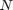 equal axial nodes of length 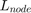.
The analysis evaluates:
- Axial coolant enthalpy rise
- Convective heat transfer at the cladding surface
- Radial temperature profile from cladding outer surface to fuel centerline
% Reactor parameters for PWR-5 thermalPower = 2000e6; % Total thermal power (W) numFuelAssemblies = 157; % Number of fuel assemblies numRodsPerAssembly = 225; % Number of rods per fuel assembly nonActiveRods = 21; % Non active rods per assembly pitch = 1.43e-2; % Pitch (m) outerRadiusClad = 5.27e-3; % Cladding outer radius (m) coreHeight = 3.66; % Core active height (m) coolantFlowRate = 13067.48; % Coolant mass flow rate (kg/s) coolantPressure = 152; % Coolant pressure (bar) coolantInletTempC = 285; % Coolant inlet temperature (°C) radialFactor = 1.9; % Nuclear radial factor for hot rod P_MPa = coolantPressure / 10; % Reactor parameters nodeCount = 10; % Number of axial nodes claddingThickness = 0.5e-3; % Cladding thickness (m) gapThickness = 0.08e-3; % Gap thickness (m) kClad = 18.0; % Cladding thermal conductivity (W/mK) kGap = 0.25; % Gap conductivity (W/mK) kFuel = 2.8; % Fuel thermal conductivity (W/mK) % Number of active channels totalChannels = numFuelAssemblies * (numRodsPerAssembly - nonActiveRods); % Coolant flow per channel coolantFlowRatePerChannel = coolantFlowRate / totalChannels; % Axial Power Profile (BOL) nodePowerFactors = [0.44, 1.03, 1.28, 1.39, 1.41, 1.28, 1.14, 0.92, 0.78, 0.33]; % Rod node area areaRod = pitch^2 - (pi * outerRadiusClad^2); % Rod area (m^2) % Cladding area areaClad = 2 * pi * outerRadiusClad * coreHeight; % Axial node surface area L_node = coreHeight / nodeCount; % Length of one node nodeSurfaceArea = 2 * pi * outerRadiusClad * L_node; % Heat transfer area per node % Hydraulic Diameter Calculation A_flow = pitch^2 - pi * outerRadiusClad^2; % Flow area per channel P_wet = 2 * pi * outerRadiusClad; % Wetted perimeter D_h = (4 * A_flow) / P_wet; % Hydraulic diameter % Average rod linear power density avgRodPowerLinDen = thermalPower / (coreHeight * totalChannels); % Hot rod linear power density hotRodPower = avgRodPowerLinDen * radialFactor; % Saturation temprature T_sat = XSteam('Tsat_p', coolantPressure) + 273.15; % Preallocating arrays nodePower = zeros(1, nodeCount); nodeHeatFlux = zeros(1, nodeCount); nodeEnthalpyIn = zeros(1, nodeCount); nodeEnthalpyOut = zeros(1, nodeCount); coolantInTempC = zeros(1, nodeCount + 1); coolantOutTempC = zeros(1, nodeCount); coolantInTempC(1) = coolantInletTempC; avgCoolantTempC = zeros(1, nodeCount); coolantDensity = zeros(1, nodeCount); fluidVelocity = zeros(1, nodeCount); fluidViscosity = zeros(1, nodeCount); Re = zeros(1, nodeCount); Cp = zeros(1, nodeCount); Prandtl = zeros(1, nodeCount); thermalCond = zeros(1, nodeCount); Nu = zeros(1, nodeCount); h_Dittus = zeros(1, nodeCount); h_Bernath = zeros(1, nodeCount); h_Thom = zeros(1, nodeCount); cladTempDittus = zeros(1, nodeCount); cladTempBernath = zeros(1, nodeCount); T_zr = zeros(1, nodeCount); T_u = zeros(1, nodeCount); T_c = zeros(1, nodeCount); T_thom = zeros(1, nodeCount); T_bulk = zeros(1, nodeCount); % Loop through nodes for i = 1:nodeCount
Axial Power Distribution and Energy Balance
The heat generated in node is:
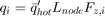
The surface heat flux is:
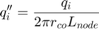
The coolant enthalpy rise is:
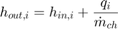
nodePower(i) = hotRodPower * (coreHeight / nodeCount) * nodePowerFactors(i); % Power (W) % Heat flux (converted to MW/m^2) nodeHeatFlux(i) = nodePower(i) / nodeSurfaceArea / 1e6; % Heat flux in MW/m^2 % Enthalpy in (J/kg) nodeEnthalpyIn(i) = XSteam('h_pT', coolantPressure, coolantInTempC(i)); % Enthalpy out (J/kg) nodeEnthalpyOut(i) = (nodePower(i)/1000) / coolantFlowRatePerChannel + nodeEnthalpyIn(i); % Update inelet coolant temperature in (C) coolantInTempC(i + 1) = XSteam('T_ph', coolantPressure, nodeEnthalpyOut(i)); % Update outlet coolant tempratuere in (C) coolantOutTempC(i) = coolantInTempC(i+1); % Average coolant temperature avgCoolantTempC(i) = (coolantOutTempC(i) + coolantInTempC(i)) / 2; % Coolant density in (kg/m^3) coolantDensity(i) = XSteam('rho_pT', coolantPressure, avgCoolantTempC(i)); % Fluid velocity in (m/s) fluidVelocity(i) = coolantFlowRatePerChannel / (areaRod * coolantDensity(i)); v_ft_s = fluidVelocity(i) * 3.28084; % Fluid velocity in ft/s % Fluid viscosity in (Pa*s) fluidViscosity(i) = XSteam('my_pT', coolantPressure, avgCoolantTempC (i)); % Reynolds number Re(i) = (coolantDensity(i) * fluidVelocity(i) * D_h) / fluidViscosity(i); % Specific isobaric heat capacity in J/(kg °C) Cp(i) = XSteam('Cp_pT', coolantPressure, avgCoolantTempC(i)) * 1e3; % Thermal conductivity in W/(m °C) thermalCond(i) = XSteam('tc_pT', coolantPressure, avgCoolantTempC(i)); % Prandtl number Prandtl(i) = Cp(i) * fluidViscosity(i) / thermalCond(i); % Nusselt number Nu(i) = 0.023 * Re(i)^0.8 * Prandtl(i)^0.4;
Convective Heat Transfer
Dittus-Boelter correlation:
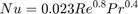
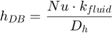
Bernath correlation:
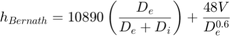
% Dittus-Boelter correlation & cladding temprature h_Dittus(i) = Nu(i) * thermalCond(i) / D_h; cladTempDittus(i) = (nodePower(i) / (h_Dittus(i) * nodeSurfaceArea)) + avgCoolantTempC(i) + 273.15; % Dittus-Boelter cladding temprature in K % Bernath correlation D_e = D_h * 3.28084; % Hydraulic equivalent diameter in feet D_i = (2 * outerRadiusClad) * 3.28084; % Heated rod diameter in feet h_Bernath(i) = (10890 * (D_e / (D_e + D_i)) + (48 * v_ft_s / D_e^0.6)) * 5.678263; cladTempBernath(i) = (nodePower(i) / (h_Bernath(i) * nodeSurfaceArea)) + avgCoolantTempC(i) + 273.15; % Bernath cladding temperature in K
Radial Heat Conduction
Cladding inner temperature:
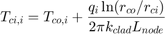
Fuel outer temperature:
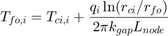
Fuel centerline temperature:
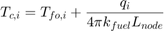
% Temprature Calculation T_zr(i) = (log(outerRadiusClad / (outerRadiusClad - claddingThickness)) / (2 * pi * kClad * L_node)) * nodePower(i) + cladTempBernath(i); % Cladding temprature drop T_u(i) = (log((outerRadiusClad - claddingThickness) / (outerRadiusClad - claddingThickness - gapThickness)) / (2 * pi * kGap * L_node)) * nodePower(i) + T_zr(i); % Gap temprature drop T_c(i) = T_u(i) + (nodePower(i) / (4 * pi * kFuel * L_node)); % Centerline temprature drop
Nucleate Boiling Limit
Thom correlation:
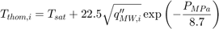
T_thom(i) = 22.5 * (nodeHeatFlux(i)^0.5 * exp(- P_MPa / 8.7)) + T_sat; % Thom's Correlation for nucleate boiling
T_bulk(i) = coolantOutTempC(i) + 273.15;
end
Plots
% Comparing Bulk Temp, Saturation Temp, and Cladding Temperatures figure; hold on; plot(1:nodeCount, T_bulk, '-o', 'LineWidth', 2, 'Color', [0, 0.4470, 0.7410], 'DisplayName', 'Bulk Temp (K)'); plot(1:nodeCount, T_sat * ones(1, nodeCount), '--', 'LineWidth', 3, 'Color', [0.8500, 0.3250, 0.0980], 'DisplayName', 'Saturation Temp (K)'); % Increased LineWidth plot(1:nodeCount, cladTempDittus, '-s', 'LineWidth', 2, 'Color', [0.9290, 0.6940, 0.1250], 'DisplayName', 'Cladding Temp (Dittus-Boelter)'); plot(1:nodeCount, cladTempBernath, '-d', 'LineWidth', 2, 'Color', [0.4940, 0.1840, 0.5560], 'DisplayName', 'Cladding Temp (Bernath)'); plot(1:nodeCount, T_thom, '-x', 'LineWidth', 2, 'Color', [0.4660, 0.6740, 0.1880], 'DisplayName', 'Thom Temp (K)'); xlabel('Axial Node'); ylabel('Temperature (K)'); title('Comparison of Bulk and Cladding Temperatures'); legend('Location', 'NorthWest', 'FontSize', 10); grid on; set(gca, 'FontSize', 12); % Comparing Bulk Temp, Saturation Temp, Cladding Temp, and Fuel Temps figure; hold on; plot(1:nodeCount, T_bulk, '-o', 'LineWidth', 2, 'Color', [0, 0.4470, 0.7410], 'DisplayName', 'Bulk Temp (K)'); plot(1:nodeCount, T_sat * ones(1, nodeCount), '--', 'LineWidth', 2, 'Color', [0.8500, 0.3250, 0.0980], 'DisplayName', 'Saturation Temp (K)'); plot(1:nodeCount, cladTempDittus, '-s', 'LineWidth', 2, 'Color', [0.9290, 0.6940, 0.1250], 'DisplayName', 'Cladding Temp (Dittus-Boelter)'); plot(1:nodeCount, T_u, '-^', 'LineWidth', 2, 'Color', [0.4940, 0.1840, 0.5560], 'DisplayName', 'Fuel Out Temp (K)'); plot(1:nodeCount, T_c, '-p', 'LineWidth', 2, 'Color', [0.4660, 0.6740, 0.1880], 'DisplayName', 'Fuel Centerline Temp (K)'); xlabel('Axial Node'); ylabel('Temperature (K)'); title('Comparison of Bulk, Cladding, and Fuel Temperatures'); legend('Location', 'NorthWest', 'FontSize', 10); grid on; set(gca, 'FontSize', 12);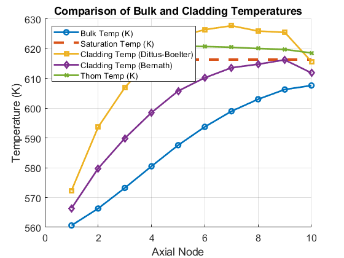 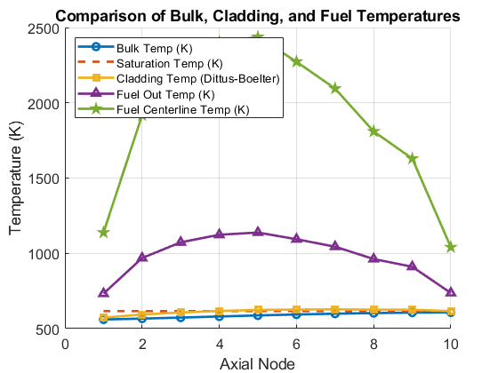